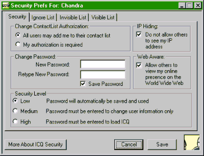
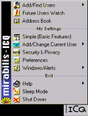

|
ICQ "Presence on the web"  |
to permit other users to see if you are connected to the ICQ network or not (green or red flower instead of the grey one), verify the blinking checkbox is checked.  |
||
[ >NEWS / >PEOPLE / >PARTIES / >MISC / >LINKS / >FAQ / >CREDITS ] |
|||